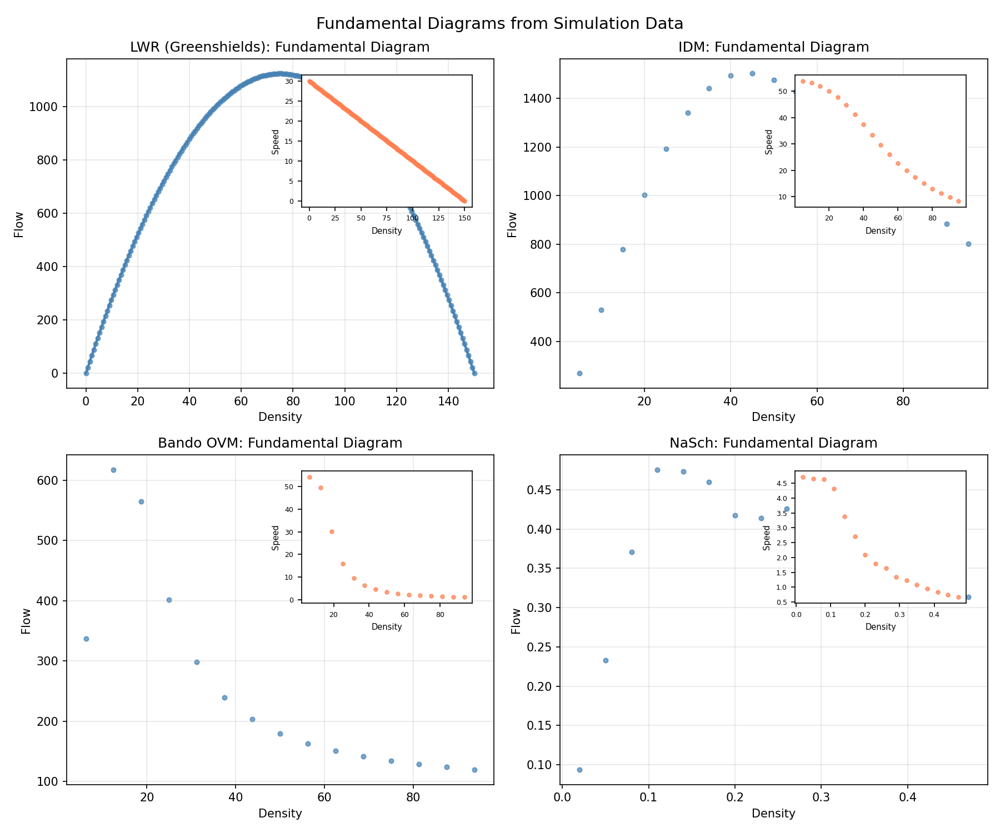
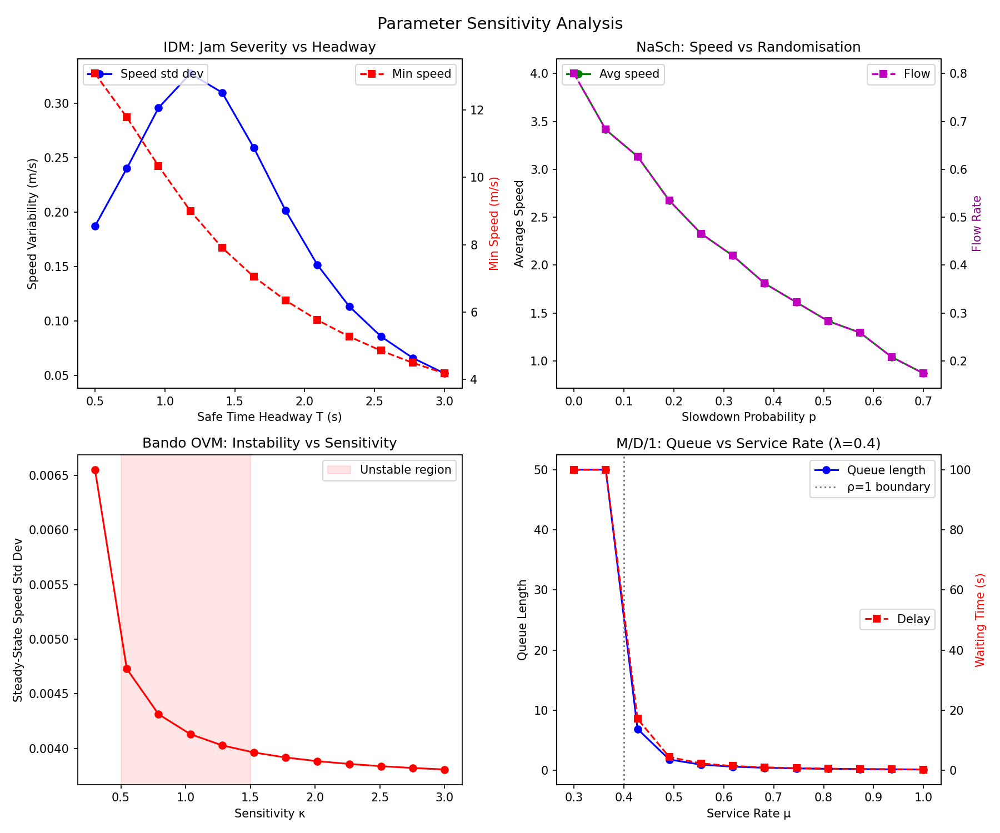
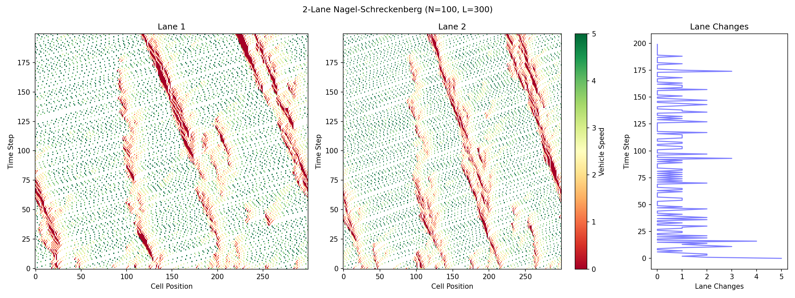
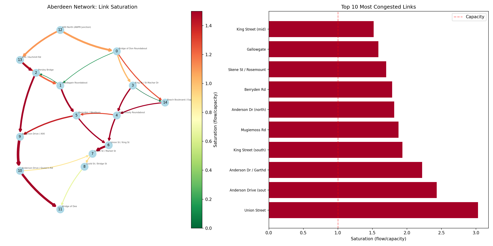
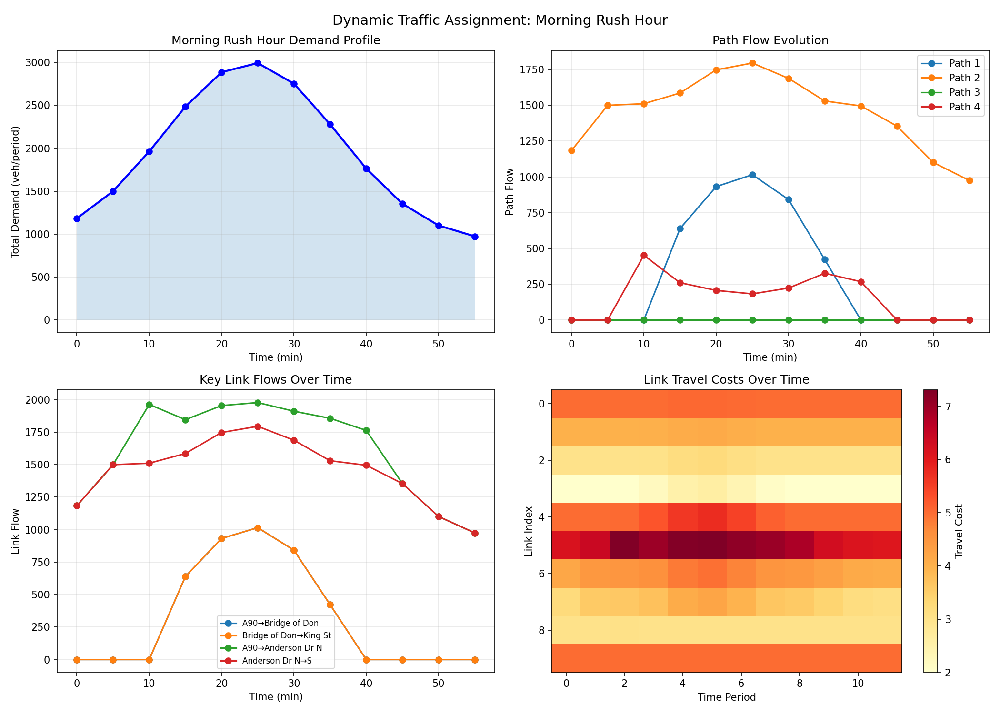
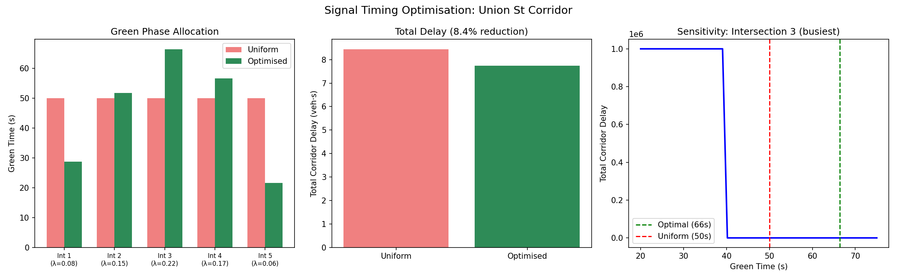

LWR Model
macroscopicPDEGodunov
Lighthill-Whitham-Richards model with Godunov scheme. Simulates shockwave propagation on an A90-like corridor using the Greenshields fundamental diagram.
Payne-Whitham Model
macroscopic2nd ordermomentum
Second-order model with anticipation term. Captures stop-and-go oscillations at merge zones that the first-order LWR model cannot represent.
Intelligent Driver Model
microscopiccar-followingIDM
50 vehicles on a circular road demonstrating spontaneous phantom jam formation from a single small perturbation propagating through the platoon.
Bando Optimal Velocity
microscopicOVMbifurcation
Demonstrates Hopf bifurcation behaviour — uniform flow becomes unstable when sensitivity parameter lies in a critical range, producing phantom jams.
Nagel-Schreckenberg CA
cellular automatonstochastic
Stochastic cellular automaton on a 500-cell lattice. Backward-propagating jam waves emerge spontaneously from the random braking rule.
Network Assignment
graphWardropBPR
Beckmann formulation on an 8-node Aberdeen network. Wardrop equilibrium distributes flow so used paths have approximately equal costs.
M/D/1 Queueing
queueing theoryintersections
Queue length and delay grow nonlinearly with utilisation. A 4-intersection corridor models how delays compound through multiple signals.
Fundamental Diagrams
flow-densityall models Flow-density relationships extracted from simulation sweeps across LWR, IDM, Bando, and NaSch models.
Parameter Sensitivity
sensitivityparameter sweep How key parameters (headway, slowdown probability, sensitivity, service rate) affect jam severity, flow, and delays.
2-Lane Nagel-Schreckenberg
multi-lanelane changing Extended CA with symmetric lane-changing rules based on incentive and safety criteria.
Aberdeen Realistic Network
15 nodesreal roads 15-junction network with real Aberdeen road names and multi-OD traffic assignment. Shows saturation levels matching known congestion patterns.
Dynamic Traffic Assignment
time-varyingrush hour Morning rush hour demand profile with carry-over congestion across 12 time periods.
Signal Optimisation
optimisationgreen splits Optimised green phase allocation across 5 intersections with shared budget constraint. 8.4% delay reduction.